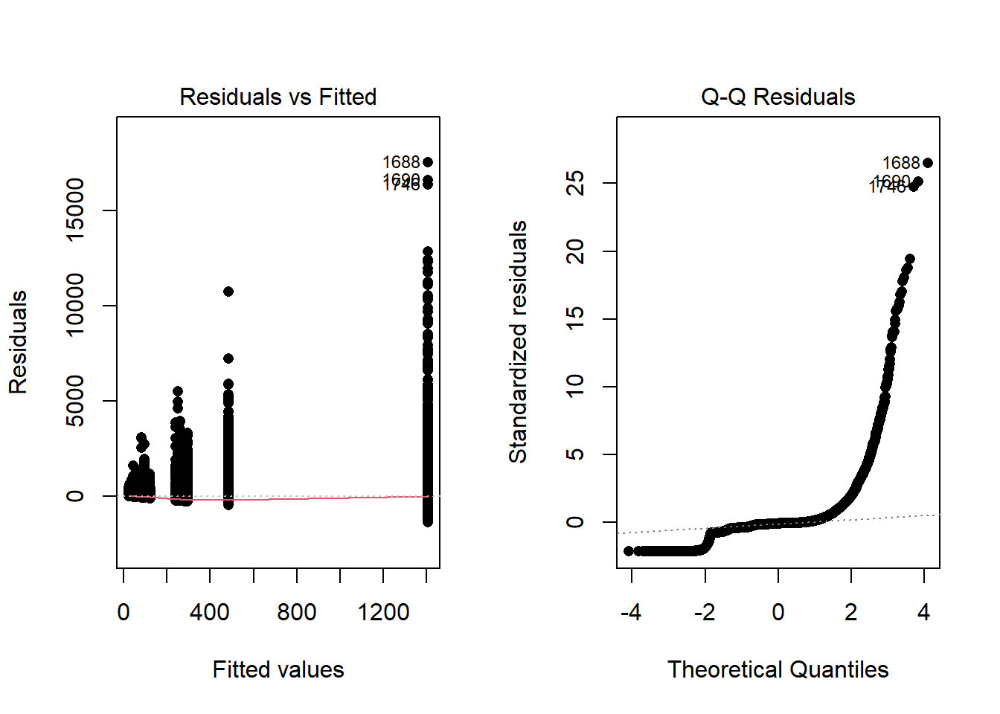
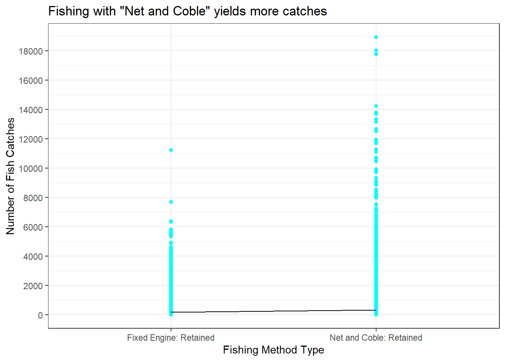
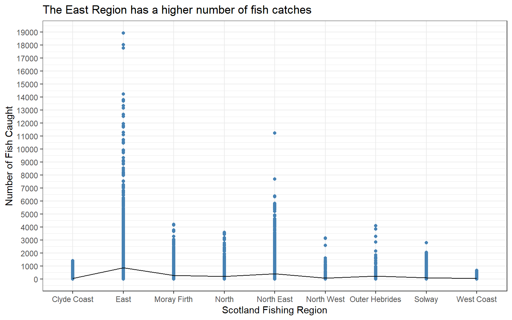
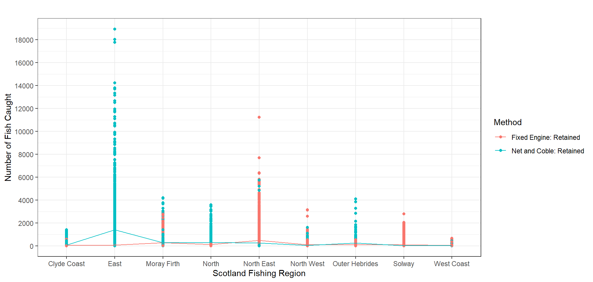

| Df | Sum Sq | Mean Sq | F value | Pr(>F) | |
|---|---|---|---|---|---|
| Method | 1 | 1.03e+08 | 1.03e+08 | 235.4 | 7.268e-53 |
| Region | 8 | 1.246e+09 | 155692115 | 355.9 | 0 |
| Method:Region | 8 | 901326006 | 112665751 | 257.5 | 0 |
| Residuals | 23081 | 1.01e+10 | 437475 | NA | NA |
My Two-way ANOVA
Background
Today’s analysis will be performed using the “Salmon Catch (1952-2022)” dataset originated from Scotland, with the purpose to find insight on what affects the number of fish catches fisherman yields according to variables such as region and catching method. In this case, the fishing methods “Net and Coble” and “Fixed Engine” will be put to the test, to see if the Fishing Method affects the fish caught. It’s Important to understand, that “Net and Coble” refers to a boat in motion with nets and coble attached and the “Fixed Engine” refers to an stationary fishing net for clarification (refer to the background picture for vizuals).
The Kaggle dataset traces back to dates prior to AI tools to avoid the chance the data being artificially constructed.

Hypothesis
Today’s analysis will utilize a two-way ANOVA with the variable Fishing Method, Region to study their interactions. With the aim to find if there are significant results to reject any of nulls stated:
Does the type of Fishing Method affect the average number of catches?
\[ H_0: \mu_\text{Fixed Engine} = \mu_\text{Net and Coble}=\mu \\ H_a: \mu_\text{Fixed Engine} \neq \mu_\text{Net and Coble} \] Does the Region affect the average number of catches?
\[ H_0: \text{All region mean catches are same} \] \[ H_a: \text{At least one region mean of catches is not same} \] Does the effect of Region change the different type of Fishing Method?
\[ H_0: \text{The effect of Region is the same for all types of catching Methods} \] \[ H_a: \text{The effect of Region is not the same for all types of catching Methods} \]
\[ \text{A significance level of α=0.05 will be used for this study.} \]
Two-way ANOVA Analysis
Computing the Two-way ANOVA yields the following results:
All three tests in the ANOVA produced p-values far below our 0.05 cutoff (7.268×10⁻⁵³, essentially 0 for “Region” & “Method:Region”), confirming that both the fishing Method and the geographical Region independently affect catch counts. In addition, the significant interaction between “Method:Region” indicates that the impact of a given Fishing Method varies depending on the Region in which it’s applied. (The zeros reported for Region and Method:Region simply reflect extremely small p-values rounded down to 0)
Diagnostic Plots
Because the diagnostic plots reveal some concerning patterns, the validity of this ANOVA is debatable. In the Residuals vs. Fitted Values plot, there’s noticeable dispersion in the early fitted values, and the Q–Q plot exhibits pronounced skewness and unequal spread. Such behavior isn’t surprising—fish catches can be extremely erratic, with many zero-catch days punctuated by occasional large hauls. Although this variability may reflect a natural feature of the data rather than a flaw in the model, it does undermine the strict assumptions of ANOVA. Therefore, we’ll proceed with these results but attach a clear warning: Don’t consider the findings fully valid.

Graphical Summaries & Conclusions
The following graphics emphasize the results of each of the three hypothesis tests.
Method
A side‑by‑side bar chart and summary table make it clear why Method matters so much: the “Net and Coble” approach captured 316 fish in total, whereas the “Fixed Engine” technique accounted for just 180. That gap—an increase of roughly 175% in total catches—drives the extremely low p‑value (7.268 × 10⁻⁵³), confirming that choice of method has a profound effect on average haul size.

| Method | Mean Fish Catches |
|---|---|
| Fixed Engine: Retained | 180.4 |
| Net and Coble: Retained | 316.6 |
Region
A breakdown by location highlights the dramatic disparity in catch rates across regions. On average, anglers in the East land about 873.3 fish, whereas those on the West Coast manage only 28.7—a more than a 30x difference. Such a vast regional gap underpins the virtually zero p‑value for Region, underscoring that where you fish plays a decisive role in haul size.

| Region | Mean Fish Catches |
|---|---|
| Clyde Coast | 46.3 |
| East | 873.3 |
| Moray Firth | 271.8 |
| North | 182.5 |
| North East | 402.2 |
| North West | 67.05 |
| Outer Hebrides | 230.9 |
| Solway | 78.08 |
| West Coast | 28.7 |
Method Choice Depending on Region
Preferences for fishing techniques vary markedly by region. In most areas, the choice between Net and Coble versus Fixed Engine yields very different catch rates—but in a few locales like the Clyde Coast and West Coast, method makes little difference. Take the East Coast, for instance: boats using the Net and Coble pull in an average of 1,406 fish, whereas those relying on Fixed Engine average just 77. Such stark contrasts across regions drive the interaction’s p‑value down to essentially zero, confirming that the effect of Method on catch numbers depends strongly on Region.

| Region | Fixed Engine: Retained | Net and Coble: Retained |
|---|---|---|
| Clyde Coast | 36.55 | 57.21 |
| East | 77.08 | 1406 |
| Moray Firth | 281.8 | 259.4 |
| North | 119.7 | 293.6 |
| North East | 485 | 251.6 |
| North West | 81.84 | 43.06 |
| Outer Hebrides | 123.9 | 238.7 |
| Solway | 95.32 | 23.49 |
| West Coast | 30.86 | 26.13 |
Interpretation
It’s recommended Choosing an productive Region such as “East” to increase the likelihood of catching fish. While Also taking into consideration the most effective Method of fishing in that Region to optimize catchings. Our pick of choice for your next fishing trip would be
Credit/References
The Analysis abstained from the use of ChatBot assitant tools. Guide and inspiration was based on the course’s guide “Statistics Notebook” using the “warpbreaks” example for reference.